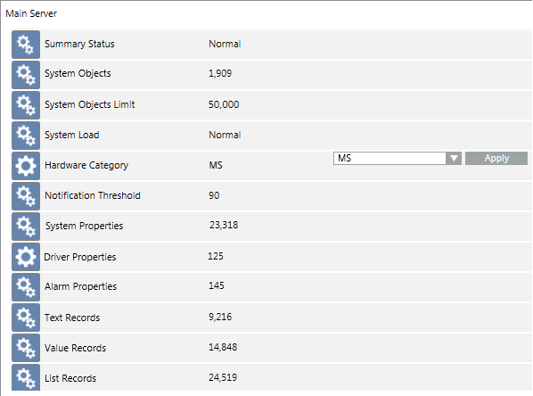
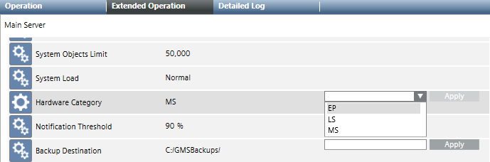

Configuring Hardware Category and System Limits
The Desigo CC software has a Hardware Category parameter that it uses to define system limits (the maximum number of System Browser tree objects that a project can have). For background information, see the reference section.
Prerequisites
- System Manager is in Engineering mode.
- System Browser is in Management View.
Check the Number of Objects Against the System Limits
Perform these steps to compare the number of objects configured in the project against the system limits (maximum permitted number of objects).
- In System Browser, select Management View.
- Select Project > Management System > Servers > Main Server.
- The Extended Operation tab displays the various properties of the Main Server object, which also include those relating to the hardware category and system limits.
- Here you can do the following:
- View the number of objects that have so far been configured in the system (Objects field), and see how this value compares to the system limits (System Objects Limit field).
- Check the System Load, which indicates whether the number of configured objects is below, close to, or above the system limits (Normal/Warning/Alarm).
- See the currently configured Hardware Category (EP, LS, or MS) and the System Objects Limit (maximum permitted objects) for that category of the installation.

Adjust the Hardware Category of a Project
Perform these steps if you need to increase the hardware category to support a higher number of system objects.
- Select Project > Management System > Servers > Main Server.
- In the Extended Operation tab, do the following:
a. From the drop-down list alongside the Hardware Category property, select the new value of hardware category (for example, EP).
b. Click Apply.
- The System Objects Limit value reflects the new selected system size (for example, 10000 objects for EP).
